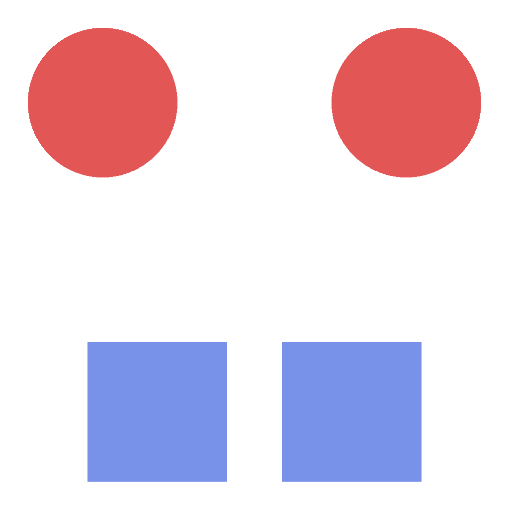
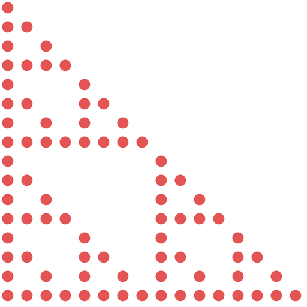
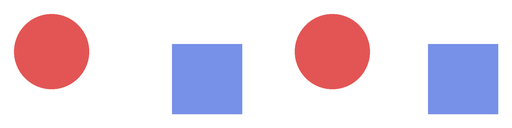

Lecture 8. A name for a computation, and parameters to call it with.
Programming Languages Lab · University of Pisa
Vincenzo Ciancia, CNR-ISTI
vincenzo.ciancia@isti.cnr.it · github.com/vincenzoml/PLDW
Lecture 7, exercises 2 and 3
and, or, not, and forand, or, not
?expr: let | ifexpr | disj
?disj: conj | or
or: disj "or" conj
?conj: neg | and
and: conj "and" neg
?neg: test | not
not: "not" neg
case Tree(data="and", children=[left, right]):
return IfExpr(transform_expression(left),
transform_expression(right), FALSE)
case Tree(data="or", children=[left, right]):
return IfExpr(transform_expression(left),
TRUE, transform_expression(right))
case Tree(data="not", children=[operand]):
return IfExpr(transform_expression(operand),
FALSE, TRUE)
a and b means if a then b else false. If a is false, b is never computed.
An operator in the environment would get both values, already computed: x != 0 and 10 / x > 1 would divide by zero.
The parser builds an IfExpr: no new node, and evaluate is the one of Lecture 7.
true and 5 gives 5, as True and 5 in Python. To make it an error, and needs its own node, which checks b.
for
for i = e₁ to e₂ do c
{
var i = e₁;
var "for limit" = e₂;
while i <= "for limit" do {
{ c };
i <- i + 1
}
}
The parser turns a for into a block we could almost have written by hand.
The bound is computed once, into a variable whose name has a space: no program can write that name, so none can see it or change it.
var n = 3; for i = 1 to n do n <- n + 1; print n
6
for i = 1 to 2 do print i; print i
1
2
Undefined identifier: i
If the bound were computed at every test, the first program would never stop. The solution is in code/lesson-07/solutions.py.
Functions
Our language, Lecture 7
var a = 3; var b = 4;
var r = 1; var i = a;
while i > 1 do { r <- r * i; i <- i - 1 };
print r;
r <- 1; i <- b;
while i > 1 do { r <- r * i; i <- i - 1 };
print r
Our language, today
fun fact(n) =
if n == 0 then 1 else n * fact(n - 1);
print fact(3);
print fact(4)
On the left, the loop is written once per number. On the right, the computation has a name, fact, and a parameter, n: it is written once, and used twice.
The code of this lecture is in code/lesson-08/: functions.py. It starts from control.py of Lecture 7.
fun square(x) = x * x;
print square(3) + square(4);
fun max(a, b) = if a > b then a else b;
print max(3, 7)
25
7
| syntax | meaning |
|---|---|
fun f(x₁, ..., xₙ) = e | a command: f is a function with parameters x₁ ... xₙ and body e |
f(e₁, ..., eₙ) | an expression: the value of e, with each xᵢ standing for the value of eᵢ |
The body of a function is an expression, as the definition of a let. A function with no parameters is written fun three() = 3, and called three().
?command: vardecl | assign | print | if | while | block
| fundecl | procdecl | callcmd
fundecl: "fun" IDENTIFIER "(" params ")" "=" expr
params: (IDENTIFIER ("," IDENTIFIER)*)?
mono: ground | boolean | call | var | paren
call: IDENTIFIER "(" args ")"
args: (expr ("," expr)*)?
A declaration is a command, like var. A call is an expression, at the level of a number or a name: it can be an operand.
( ... )? means "zero or one time": the list of parameters, and of arguments, can be empty.
procdecl and callcmd are for procedures, later today. fun and proc become reserved words.
@dataclass(frozen=True)
class FunDecl:
name: str
params: tuple[str, ...]
body: Expression
@dataclass(frozen=True)
class Call:
name: str
args: tuple[Expression, ...]
FunDecl is a command, Call an expression.
The parameters are names, strings, as in Let. The arguments are expressions.
FunDecl(name='square', params=('x',),
body=BinaryExpression(op='*', left=Var(name='x'), right=Var(name='x')))
Print(expr=Call(name='square', args=(Number(value=3),)))
Semantic domains
@dataclass(frozen=True)
class Function:
params: tuple[str, ...]
body: Expression
env: Environment # of the declaration
type EVal = int | bool
type MVal = EVal
type DVal = (EVal | Operator | Loc
| Function | Procedure)
A declared function is a closure: the parameters, the body, and the environment where it was declared.
A name can stand for a function: Function is denotable. It is not expressible: no expression gives a function, and no variable holds one.
fun square(x) = x * x; var g = square
square is not a value
Exercise 3 makes functions expressible.
case Call(name, args):
function = lookup(env, name)
if not isinstance(function, Function):
raise ValueError(f"{name} is not a function")
values = [evaluate(arg, env, state) for arg in args]
check_arity(name, function.params, values)
call_env = function.env
for param, value in zip(function.params, values):
call_env = bind(call_env, param, value)
return evaluate(function.body, call_env, state)
The arguments are computed in the environment of the call. The body is computed in the environment of the closure, with each parameter bound to its value.
A parameter is bound like a name of let: to a value, not to a location. The body cannot assign it.
check_arity raises square takes 1 argument(s), not 2 when the numbers differ.
\( ⟦f(e_1, \dots, e_n)⟧(\rho, \sigma) = ⟦e⟧\big(\rho'[x_1 \mapsto v_1, \dots, x_n \mapsto v_n],\ \sigma\big) \)
f.With \( n = 1 \), it is the equation of let of Lecture 5, with the definition computed now and the body written somewhere else.
k?
var k = 1;
fun addk(x) = x + k;
print let k = 100 in addk(1);
k <- 5;
print addk(1)
2
6
The first call is in the body of let k = 100. The body of addk still sees the variable k: the one visible where addk was declared. This is static scoping, as in Lecture 5.
The second call sees 5. The closure keeps the location of k, and the store says what it holds now: the Python example of Lecture 6, "What a closure sees".
With call_env = env in place of function.env, the scoping is dynamic: the first call prints 101.
fun h(x) = x + z;
var z = 1;
print h(1)
Undefined identifier: z
When h is declared, there is no z in the environment. The closure keeps that environment, and var z after it does not change it.
A function sees the names declared before it, and nothing else, as every command in a sequence.
Python looks the name up when the function is called, in the module: there, the same program prints 2. C refuses it when compiling.
Recursion
fun fact(n) =
if n == 0 then 1 else n * fact(n - 1);
print fact(10);
fun fib(n) =
if n < 2 then n else fib(n - 1) + fib(n - 2);
print fib(15)
3628800
610
The body of fact uses fact. For this, the environment kept by the closure must contain fact itself.
The recursion stops because if computes one branch only: Lecture 7. With if as an operator, fact(0) would compute fact(-1), and so on, forever.
case FunDecl(name, params, body):
function = Function(params, body, env)
return bind(env, name, function), state
The closure keeps env, the environment before the declaration. The name fact is added after, in a new environment the closure never sees.
print fact(3)
Undefined identifier: fact
The closure needs the environment that bind returns, and bind needs the closure: each one must exist before the other.
case FunDecl(name, params, body):
def env_with_function(n: str) -> DVal:
if n == name:
return function
return env(n)
function = Function(params, body, env_with_function)
return env_with_function, state
env_with_function is bind(env, name, function), written out by hand.
When it is defined, function does not exist yet. It is looked up only when the environment is asked for name, at the first call: by then it exists.
So the closure contains an environment that contains the closure: a cycle, made with a function, as every environment since Lecture 4.
OCaml asks for let rec to allow this. Python, like our language, allows it always.
print fact(300)
3060575122164406360...
print fact(400)
RecursionError: maximum recursion depth exceeded
Each call of our language is a few nested calls of evaluate: the call, the if, the multiplication. Python's limit of about 1000 open calls becomes a limit of about 300 calls of fact.
In Lecture 7 the same limit came up with while, and a loop in Python removed it. Here the recursion is in the program being run: the interpreter has to follow it.
sys.setrecursionlimit raises the limit. Real interpreters keep their own stack of calls, as data, instead of using Python's.
Procedures
var total = 0;
proc add(x) total <- total + x;
add(3);
add(4);
print total
7
The body of a function is an expression, and in Lecture 6 we decided that an expression never changes the state.
A procedure is the same thing for commands: its body is a command, and a call is a command. It gives no value: it changes the store.
| syntax | meaning |
|---|---|
proc p(x₁, ..., xₙ) c | a command: p is a procedure with body c |
p(e₁, ..., eₙ) | a command: execute c, with the arguments |
procdecl: "proc" IDENTIFIER "(" params ")" command
callcmd: IDENTIFIER "(" args ")"
@dataclass(frozen=True)
class ProcDecl:
name: str
params: tuple[str, ...]
body: Command
@dataclass(frozen=True)
class CallCommand:
name: str
args: tuple[Expression, ...]
@dataclass(frozen=True)
class Procedure:
params: tuple[str, ...]
body: Command
env: Environment # of the declaration
The same shape as for functions, one level up: a Command where a function has an Expression.
The declaration builds the closure with the same cycle, so a procedure can call itself.
A call to a function at the start of a command, square(3), is a CallCommand, and fails: square is not a procedure. And print add(1) fails: add is not a function.
case CallCommand(name, args):
callee = lookup(env, name)
if not isinstance(callee, Procedure):
raise ValueError(f"{name} is not a procedure")
values = [evaluate(arg, env, state) for arg in args]
check_arity(name, callee.params, values)
call_env = callee.env
for param, value in zip(callee.params, values):
loc, state = allocate(state, value)
call_env = bind(call_env, param, loc)
_, state = execute(callee.body, call_env, state)
return env, state
Each parameter is a new variable: a new location, holding the value of the argument. Inside the body it can be assigned.
The body is executed in the environment of the closure. Its state goes on; its environment is thrown away, as for a block.
The equation: \( ⟦p(e_1, \dots, e_n)⟧(\rho, \sigma) = (\rho, \sigma') \), where \( \rho(p) = (x_1 \dots x_n,\ c,\ \rho') \) and \( ⟦c⟧(\rho'[x_i \mapsto \ell_i],\ \sigma[\ell_i \mapsto v_i]) = (\rho'', \sigma') \), with \( \ell_i \) new locations.
proc countdown(n)
while n > 0 do { print n; n <- n - 1 };
var a = 3;
countdown(a);
print a
3
2
1
3
countdown changes n down to 0, and a is still 3.
n is a new location that received a copy of the value of a. This is call by value.
A procedure changes a variable of the caller only if it sees it in its own closure, as add sees total.
Exercise 2: call by reference, where the parameter is the location of the argument.
| function | procedure | |
|---|---|---|
| declared with | fun f(x) = e | proc p(x) c |
| body | an expression | a command |
| a call is | an expression | a command |
| a call gives | a value | a new store |
| a parameter is | a name for a value, as in let | a new variable, as in var |
| changes the store | never | through the variables it sees |
Pascal and Ada have both, as we do. In C and Python there is only one kind, which can do both: compute a value and change the state.
Summary
| decision | alternative | why |
|---|---|---|
| a function is a closure | the body alone | static scoping |
| the closure contains itself | let rec, as in OCaml | recursion without a new keyword |
| a function's body is an expression | commands and return | a function never changes the state |
| procedures apart from functions | one kind, as in Python | the same line as Lecture 6, between expressions and commands |
| parameters by value | by reference | a call cannot change the caller's variables |
| functions denotable, not expressible | functions as values | a smaller language; exercise 3 |
PARSER
fundecl: "fun" IDENTIFIER
"(" params ")" "=" expr
procdecl: "proc" IDENTIFIER
"(" params ")" command
callcmd: IDENTIFIER "(" args ")"
call: IDENTIFIER "(" args ")"
DOMAINS
class Function:
params, body, env
class Procedure:
params, body, env
DVal = ... | Function | Procedure
INTERPRETER
evaluate: Call
execute: FunDecl, ProcDecl,
CallCommand
The full code is in code/lesson-08/functions.py.
The language has expressions, let, variables, if, while, functions and procedures. The project asks for exactly these, in a language for a domain of your choice.
Each of them came with a decision, and with an equation that says what it means. The interpreter is the equations, written in Python.
The images language of the exercises has all of them too: it can be the starting point of a project.
Exercises
fun double(x) = x + x; print double(double(3))
var n = 2; fun times(x) = x * n; n <- 10; print times(3)
fun f(x) = x + 1; print let f = 5 in f
fun g(x) = if x > 0 then g(x - 1) + 2 else 0; print g(4)
var c = 0; proc tick() c <- c + 1; tick(); tick(); print c
proc p(x) { x <- x * 2; print x }; var y = 4; p(y); print y
fun h(x) = x + z; var z = 1; print h(1)
fun sq(x) = x * x; sq(2)
Today's interpreter: code/lesson-08/functions.py
Level 1 of 4
times read: the one of the declaration, or of the call?f a function or a number in the body of the let?
proc swap(ref a, ref b) {
var t = a; a <- b; b <- t
};
var x = 1; var y = 2;
swap(x, y); print x; print y 2 1
swap(x, 3) ?
proc both(ref a, ref b) {
a <- a + 1; b <- b + 1
};
var z = 0; both(z, z); print z ?
Level 2 of 4
ref before a parameter of a procedure. Such a parameter is not a new variable: it is bound to the location of the argument, which must be a variable.swap(x, 3) do?The same idea as alias, exercise 3 of Lecture 6: two names, one location. C++ writes int& a, Pascal var a.
fun twice(f, x) = f(f(x));
fun inc(x) = x + 1;
print twice(inc, 5) 7
fun dec(x) = x - 1;
fun pick(b) = if b then inc else dec;
var g = pick(false);
print g(5) ?
var k = 10;
fun addk(x) = x + k;
fun apply(f, k) = f(1);
print apply(addk, 100) ?
Level 3 of 4
EVal, MVal, DVal, change?k does addk see?A function that takes or returns a function is a higher-order function, as map and sorted(..., key=...) in Python.
fun pair(p) = p | mirror(p);
print pair(circle) / pair(square)
fun sierpinski(p, size) =
if width(p) >= size then p
else sierpinski(p / (p | p), size);
print sierpinski(scale(circle, 0.0625), 512)
var gallery = scale(circle, 0.25);
proc add(p)
gallery <- gallery | scale(p, 0.25);
add(square); add(mirror(circle)); add(square);
print gallery
Level 4 of 4 · a longer one
The language of images of Lecture 7, with today's fun and proc.
A call of a declared function looks like a call of a primitive, mirror(p) or scale(p, 0.5). The evaluator tells them apart by what the name stands for.
A parameter can stand for an image or a number. Can it stand for a file name, "sky.png"? Start from your solution, or from imagecontrol.py.



What each print shows. The second program calls sierpinski five times. A solution is in code/images/imagefun.py: run it with --show to open the windows.